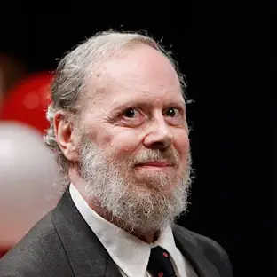
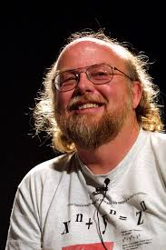

| # | Ismi Familyasi | Rasmi | Dasturlash tili | Asos solingan yili | Malumot |
|---|---|---|---|---|---|
| 1 | Dennis Ritchie |  | C | 1972 | Ko'p paradigma : imperativ ( protsessual ), tuzilgan |
| 2 | James Gosling |  | Java | 1995 | Ko'p paradigma : umumiy , ob'ektga yo'naltirilgan ( sinfga asoslangan ), funktsional , imperativ , aks ettiruvchi , parallel |
| 3 | Brendan Eich | |
JavaScript | 1995 | Ko'p paradigma : hodisaga asoslangan , funktsional , imperativ , protsessual , ob'ektga yo'naltirilgan |
| 4 | Guido van Rossum | Phyton | 1991 | Multi-paradigm: object-oriented, procedural (imperative), functional, structured, reflective | |
| 5 | Rasmus lerdorf | PHP | 1995 | Ko'p paradigma : imperativ , funktsional , ob'ektga yo'naltirilgan , protsessual , aks ettiruvch |